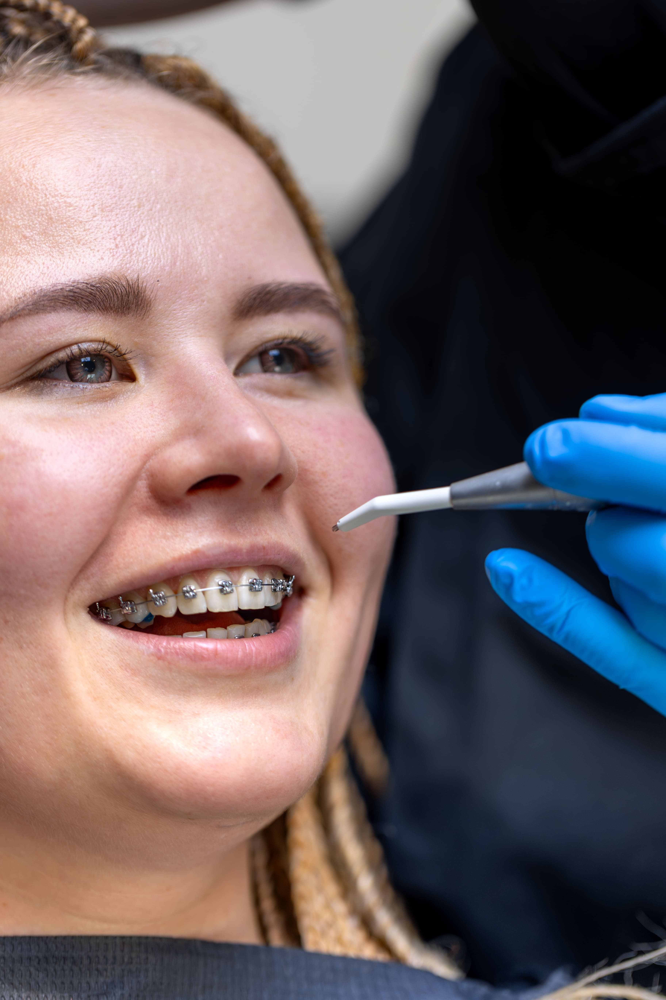

La ortodoncia (frenillos) es una especialidad de la odontología que se encarga de corregir la posición de los dientes y los huesos de la boca. Su objetivo es mejorar la mordida, la apariencia de la sonrisa y la función de los dientes.
Mejora la mordida, permite una mejor higiene dental, corrige problemas funcionales como dificultad al masticar o hablar, y también mejora la estética de la sonrisa.
